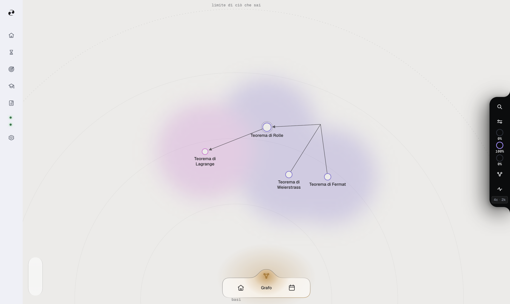
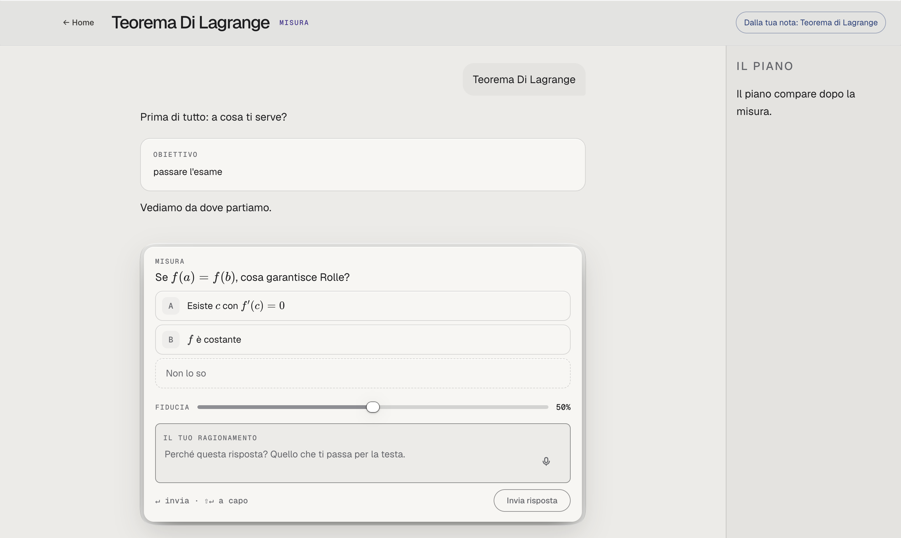
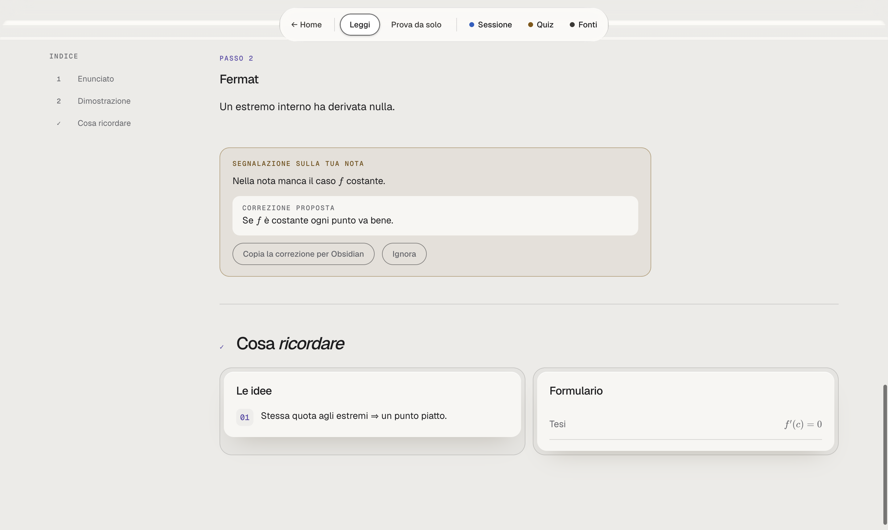
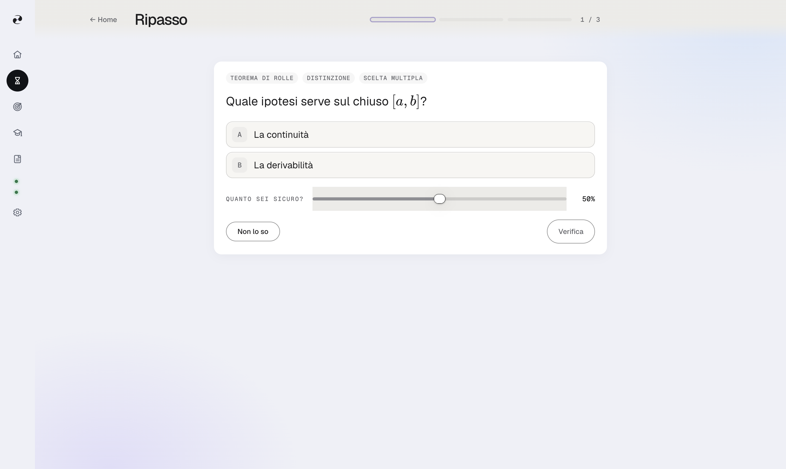
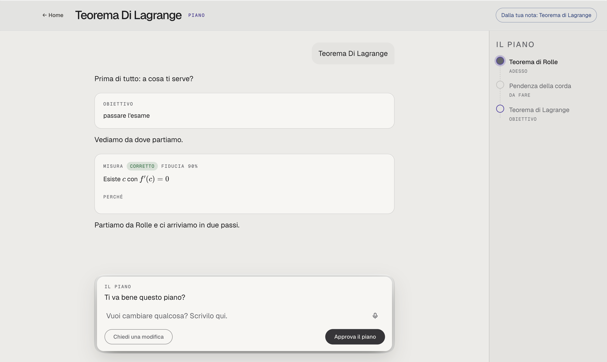

Miss one prerequisite in week 3 and everything built on it is noise.
The question isn’t whether to use AI. It’s how it is built.

A first-year STEM student, an oral exam in six weeks, notes in Obsidian.

The tutor checks what you really remember about Rolle before it touches Lagrange. You predict, it explains, you verify.

Each theorem as formula, plain language and intuition. Proofs stay hidden until you try. A mistake in your own notes is flagged, not absorbed.

You say how sure you are before answering. Wrong at 80% isn’t a gap, it’s a misconception, and it comes back.
Within 24 hours of the lecture, before forgetting does the work for you.
Who. First and second-year STEM students: Calculus, Linear Algebra, Physics.
When. The 24 hours after a lecture, and the six weeks before an exam.
Already has. Their own notes in Markdown, and an AI subscription they use badly.
Pain. Courses are cumulative. One missing prerequisite blocks the next ten theorems.
tertiary students in the EU
Eurostat, 2022of them in STEM (26.9%)
Eurostat, 2023university students in Italy
MUR · to confirm on USTAT
Goal: Lagrange.
First stop: Rolle.
No Mac · no Claude or Gemini subscription · notes not in Markdown · interface in Italian.
Our own classrooms: first-year AI and Maths at Sapienza.
We haven’t run a classroom trial, so we won’t invent results. Here is the evidence we build on, and what the app already measures.
NextOne course, one exam session, real grades against the readiness index.
Guardrailed tutor: +127% in practice with no exam penalty · Bastani et al., 2024
AI that helps you think, and never thinks for you.
Your notes → concept graph → memory → practice → readiness